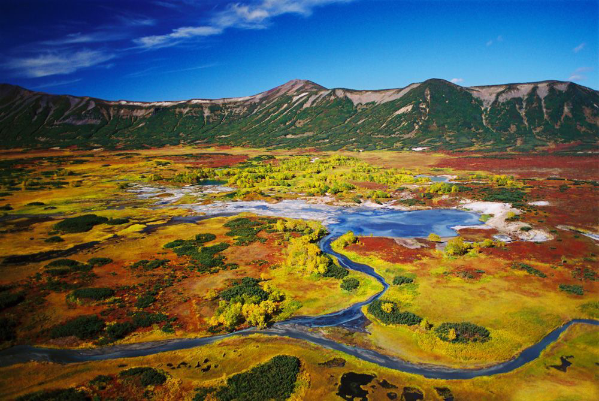

ОБЗОР
Кальдера — это котловина, впадина диаметром 10 км на месте уже не существующего древнего вулкана. Кальдера вулкана Узон, или сопка Узон, — это памятник природному катаклизму, происходившему здесь сорок тысяч лет назад.
Точнее, последнее извержение произошло около восьми с половиной тысяч лет назад. Его след — километровая воронка озера Дальнее. Гористые хребты, окружающие кальдеру, — стенки бывшего кратера. Высочайшая вершина — пик Бараний (1617 м). Общая площадь кальдеры вулкана Узон — около 150 квадратных километров. Восточная часть холмистая, западная заболочена.
На Узоне есть все, чем знаменита Камчатка: горячие источники и холодные реки, ядовитые грязевые котлы, гейзеры и фумаролы, ягодная тундра и березовый лес, даже выходы нарзана. Уникальный минералогический состав — породы меняются под воздействием температур и вулканических процессов, и их слои видны, как на срезе. Здесь найдены гидротермальные минералы, которые не встречаются больше нигде. Для ученых Узон важен прежде всего тем, что его экосистема позволяет исследовать геологические процессы в естественной среде, в развитии.
-

Фотоальбом
В кальдере сотни мелких озер и множество заболоченных участков. Под воздействием подводных фумарол поверхность этих озер пузырится и бурлит. Самые крупные из озер — незамерзающее Фумарольное и холодное Центральное. Озеро Банное с выходами радона и резервуаром расплавленной серы под «ложным дном», то есть под коркой застывшей серы, прогревается до +40 °С даже зимой.
В термальных источниках Узона обитают уникальные микроорганизмы — археи, которые не относятся ни к водорослям, ни к бактериям. Они живут в кипящей воде, вместо кислорода усваивают серу и сероводород. Такие микроорганизмы называются термофильными. В 1993 году на Узоне были открыты тионовые бактерии — они живут в источниках, нагретых до +80...+90 °С. Вода, населенная тионовыми бактериями, окрашивается в белый цвет, и такие ручьи рядом с красно-охристыми глинистыми буграми смотрятся как «молочные реки с кисельными берегами».
В апреле-мае на Узон приходят медведи. Они с удовольствием разгуливают по теплой узонской глине и питаются травой. Особенно много их летом и осенью, когда созревают голубика и кедровый орех — основная «вегетарианская» пища камчатских медведей.
Местные жители советуют непременно посмотреть на кальдеру ранним утром с окрестных гор. Оттуда открывается изумительный вид на желтые фумарольные поля со стоящими над ними столбами пара, зеленые рощи, тундру и озера.
С 1996 года Узон включен ЮНЕСКО в Список Всемирного природного наследия в номинации «Вулканы Камчатки».
МЕСТНЫЕ ОСОБЕННОСТИ
На территории Кроноцкого государственного заповедника климат морской, лето короткое, прохладное и дождливое, зима мягкая и многоснежная, часты сильные ветры и штормы. Средняя температура августа +12 °С, максимальная +24 °С, средняя температура февраля –7 °С, минимальная –25 °С.
Лучшее время для посещения кальдеры вулкана Узон — лето и начало осени.